N-D Test Functions B¶
N-D Test Functions B¶Bartels-Conn test objective function.
This class defines the Bartels-Conn global optimization problem. This is a multimodal minimization problem defined as follows:
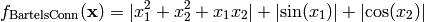
Here,  represents the number of dimensions and 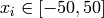 for
represents the number of dimensions and 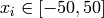 for  .
.
Two-dimensional Bartels-Conn function
Global optimum:  for
for  for
for
Beale test objective function.
This class defines the Beale global optimization problem. This is a multimodal minimization problem defined as follows:
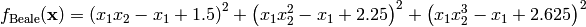
Here, represents the number of dimensions and ![x_i \in [-10, 10]](_images/math/d511ca3206c16bae3e3af3c02835f3fe9fb07286.png) for
for  .
.

Two-dimensional Beale function
Global optimum:  for 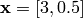
for 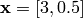
Bird test objective function.
This class defines the Bird global optimization problem. This is a multimodal minimization problem defined as follows:
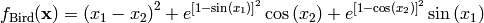
Here, represents the number of dimensions and ![x_i \in [-2\pi, 2\pi]](_images/math/550244574963351248b8b30f9d583095c065c220.png) for .
for .
Two-dimensional Bird function
Global optimum: 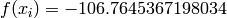 for 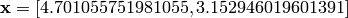 or 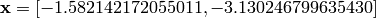
Bohachevsky test objective function.
This class defines the Bohachevsky global optimization problem. This is a multimodal minimization problem defined as follows:
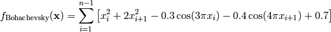
Here, represents the number of dimensions and ![x_i \in [-15, 15]](_images/math/fca9e26666540be67aae472b6068981e5e8b1471.png) for .
for .
Two-dimensional Bohachevsky function
Global optimum: for for
BoxBetts test objective function.
This class defines the Box-Betts global optimization problem. This is a multimodal minimization problem defined as follows:
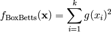
Where, in this exercise:
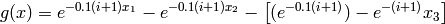
And 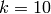.
Here, represents the number of dimensions and 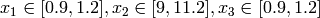.
Global optimum: for 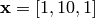
Branin 1 test objective function.
This class defines the Branin 1 global optimization problem. This is a multimodal minimization problem defined as follows:
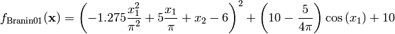
Here, represents the number of dimensions and 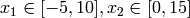

Two-dimensional Branin 1 function
Global optimum: 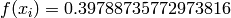 for 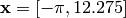 or 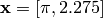 or 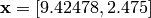
Branin 2 test objective function.
This class defines the Branin 2 global optimization problem. This is a multimodal minimization problem defined as follows:
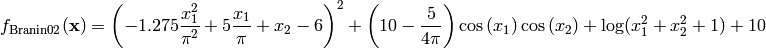
Here, represents the number of dimensions and 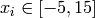 for .

Two-dimensional Branin 2 function
Global optimum: 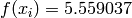 for 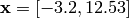
Brent test objective function.
This class defines the Brent global optimization problem. This is a multimodal minimization problem defined as follows:
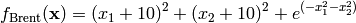
Here, represents the number of dimensions and for .
Two-dimensional Brent function
Global optimum: for 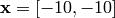
Brown test objective function.
This class defines the Brown global optimization problem. This is a multimodal minimization problem defined as follows:
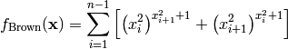
Here, represents the number of dimensions and ![x_i \in [-1, 4]](_images/math/0c11019405ea0856aeb25fbdd6d05b00b32e7e0e.png) for .
for .
Two-dimensional Brown function
Global optimum: for for
Bukin 2 test objective function.
This class defines the Bukin 2 global optimization problem. This is a multimodal minimization problem defined as follows:
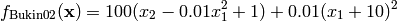
Here, represents the number of dimensions and 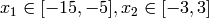
Two-dimensional Bukin 2 function
Global optimum: for 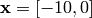
Bukin 4 test objective function.
This class defines the Bukin 4 global optimization problem. This is a multimodal minimization problem defined as follows:
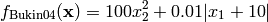
Here, represents the number of dimensions and

Two-dimensional Bukin 4 function
Global optimum: for
Bukin 6 test objective function.
This class defines the Bukin 6 global optimization problem. This is a multimodal minimization problem defined as follows:
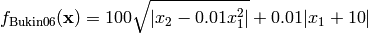
Here, represents the number of dimensions and
Two-dimensional Bukin 6 function
Global optimum: for 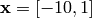